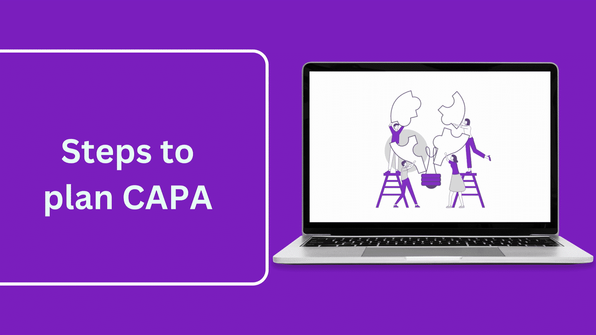
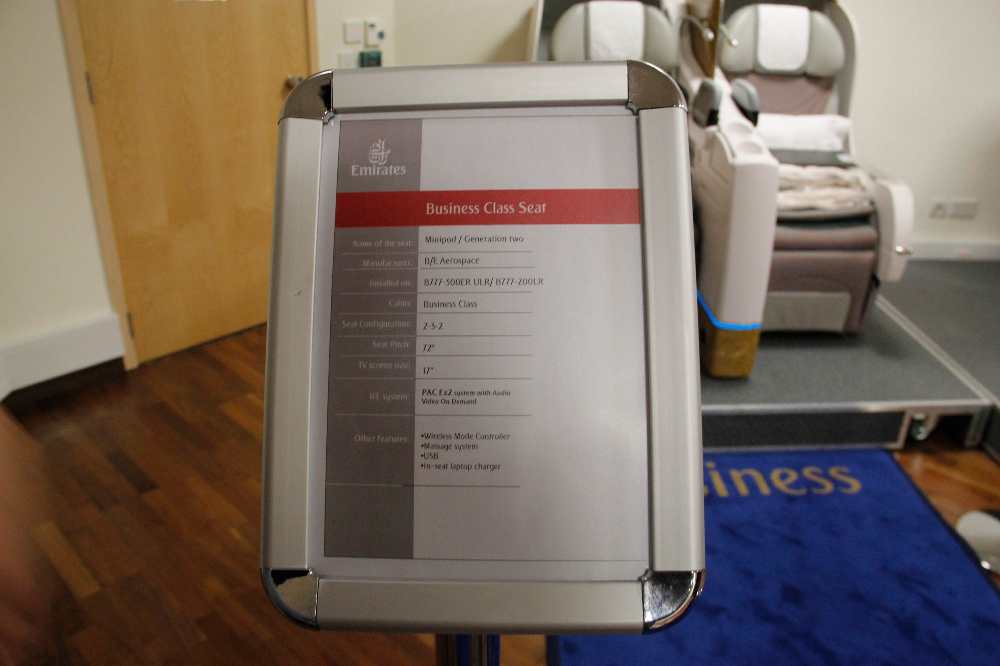
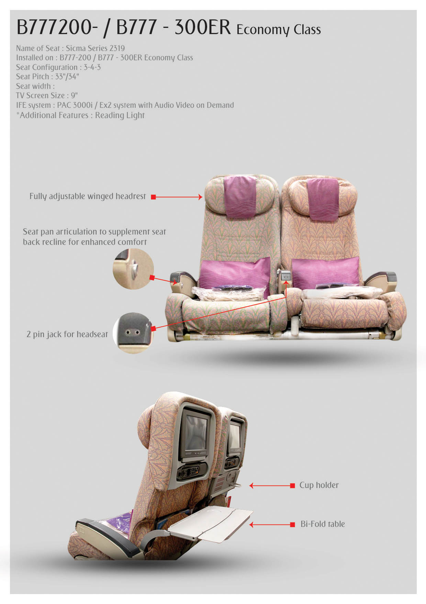
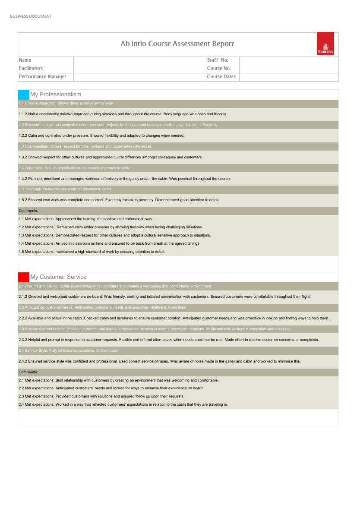

Startr — Roster Automation
1Situation
Every training cycle, the Manpower Planning (MPP) team built the monthly training roster by hand in Excel — colour-coding each trainer, course and shift manually across a dense grid. It worked, but it was slow: roughly two full days of manual entry each time, with plenty of room for error along the way.
2Challenge
This wasn't my own team's process — I noticed a colleague's team losing two days a cycle to it and decided to fix it anyway. Drawing on a background in Computer Information Systems, I taught myself advanced Excel VBA from published textbooks and built Startr — a purpose-built automation tool that generates the monthly training demand roster directly from the underlying data, with built-in filtering by date and course. I later added a third-trainer capability in version 1.9 as the team's needs grew.
3Result
Startr cut roster creation from two days to about ten minutes — confirmed by the receiving manager, not self-reported. It has continued to save the MPP team hours every cycle since.
“The new roster creation has saved manhours for the MPP team and aligned the roster to TMS.” — Performance review, 2018–19


PureHealth — Axonify LMS & E-Learning
1Situation
PureHealth had no learning management system and no structured way to deliver or track training across its roughly 26,000 employees — including lab and clinical staff who needed regulated compliance training in fire safety and infection control, tailored to a laboratory environment rather than generic workplace content.
2Challenge
Stand up a new LMS platform (Axonify) and populate it with functioning, genuinely useful e-learning content — not just a system that technically worked, but courses staff could actually learn from.
3Action
Collaborated as part of the core project team on the Axonify implementation — vendor coordination, system configuration, and organisation-wide rollout, alongside the Biz group and the L&D Assistant Manager. Designed and developed the e-learning content that populated the platform: a 15-lesson Fire Safety course covering fundamentals through evacuation procedures (including inclusive evacuation for reduced-mobility staff) and Fire Warden roles, an Infection Control course adapted for lab-specific requirements (N95 fit-testing, TB lab protocols, PPE selection), a Sample Transport Tracker module, and the QDMS Corrective and Preventive Action (CAPA) module shown below. Personally packaged every course as SCORM 1.2 out of Articulate Storyline and administered the Axonify uploads directly. Designed and distributed the annual learning calendar communication, and built 3 Power BI dashboards covering 5 report types — participation, topic progress, knowledge summary, certification, and user summary.
4Result
Two production-ready compliance courses and a working LMS rollout, with self-managed content publishing end to end — design, SCORM packaging, and platform administration all handled directly, not routed through IT.

Seat Demo Project — Paper to Digital
1Situation
In the cabin crew training room, seat and suite specification information — seat pitch, IFE system, configuration, features — was presented on printed cards mounted on a stand next to each seat mock-up. Updating them meant reprinting, and the format didn't scale well as more seat variants were added.
2Challenge
Move the seat and suite information from paper-based to an electronic, interactive format — working with Training Specialist colleagues from the Service Planning and Operations team to align on what the new version needed to show and how it would be used in the room.
3Action
Attended planning meetings to align on vision and content needs, identified new photography requirements, researched smart-wall display technology for the room, and costed tablets and supporting hardware with Procurement. Redesigned the reference format itself — moving from a plain text spec sheet to a labelled diagram format with callouts pointing directly at seat features, so crew could see what each feature was, not just read a description of it.
4Result
A clearer, more visual reference format ready for electronic display, developed collaboratively with the Service Planning and Operations team as part of the room's wider move toward interactive, tablet-based reference material.


Business Class Assessment Matrix
1Situation
The Business Class assessment matrix — the Continual Assessment Form, Course Competency Assessment Criteria, Business Class Wine List, and Full Practical Assessment — existed as four separate documents, printed at 25 pages. On top of the length, the file had an access issue affecting intranet and Apple-device users.
2Challenge
Update the crew portal's course overview and assessment criteria, and find a way to bring the four documents together into a single, shorter reference without losing any of the assessment content — while fixing the access problem for the users who couldn't open it.
3Action
Worked with the Products and Services and Performance Management teams to redesign the course overview, creating new concept artwork and reformatting the assessment matrix from 25 down to 11 printed pages for cost efficiency. Identified and resolved the intranet/Apple-device access issue by splitting the file into separate linked versions rather than one large document. Consolidated the Continual Assessment Form, Course Competency Assessment Criteria, Business Class Wine List, and Full Practical Assessment into the single crew-portal reference shown below.
4Result
A single, working crew-portal reference in place of four separate documents — shorter to print, accessible on every platform crew actually used it on, and easier to keep up to date going forward.
